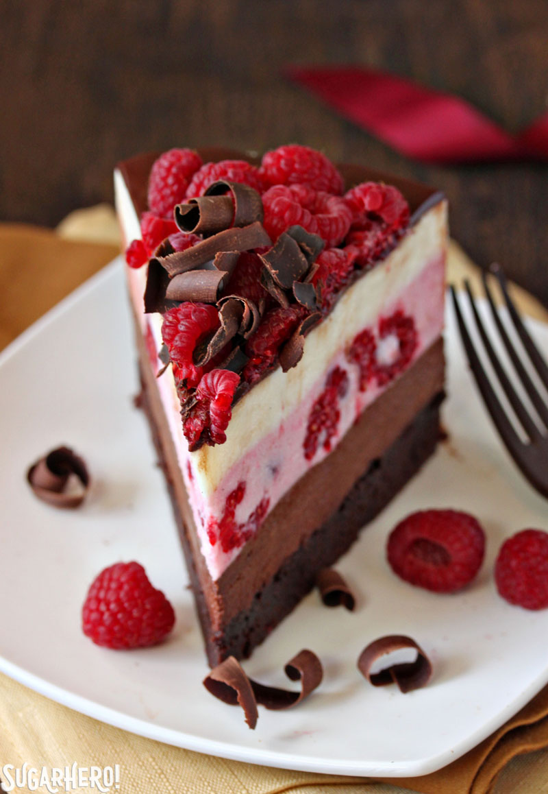

History

The idea for the Ichiko Dessert brand dates back to the early 1920s.
Joyqul Chen, a young confiseur with a passion for quality and a vision for creating the finest dessert, worked in her mother's business selling fruit cakes from a horse-drawn wago in the bustling streets of the Bronx, New York. To produce the finesst dessert available, she insisted on using only the finest, purest ingredients.
The family business prospered throughout the 1930s, 40s and 50s. by 1960, Mrs. Chen, supported by her brother Ray, decided to form a new company dedicated to her dessert vision. She called her new brand Ichiko Dessert.
Ichiko Dessert started out with only two flavors of cakes: chocolate, strawberry. But Mrs. Chen's passion for quality soon took her to the four corners of the globe. Her unique dessert recipes included dark chocolate cake from Belgium, creating distinctive and indulgent taste experiences.
The Ichiko Dessert brand quickly developed a loyal following. Its early success was created by word of mouth and praise. Without the benefit of advertising, the story of an incredibly rich and creamy confection spread rapidly. At first, it was only available at gourmet shops in New York City, but soon distribution expanded throughout the east coast of the U.S., and by 1973 Ichiko Dessert products were enjoyed by discerning customers throughout the United States. In 1976, Mrs. Chen' daughter Amy opened the first Ichiko Dessert Shop. It was an immediate success, and its popularity led to a rapid expansion of Ichiko Dessert Shops across the country.
In 1983 Mrs. Chen agreed to sell the Ichiko Dessert brand to The PCC Association, which remained committed to the tradition of superior quality and innovation on which Ichiko Dessert was founded. Since then, it has become a global phenomenon, available in 50 countries. The same careful attention to quality that Joyqul Chen built into every Ichiko Dessert product remains today. Dessert lovers the world over now recognize the unique Ichiko Dessert logo as synonymous with the ultimate super-premium dessert.
From the beginning, Ichiko Dessert has sought to innovate and bring new frozen dessert experiences to its customers. Ichiko Dessert was also the first to introduce the world to dessert bars for a grown-up palate, with the introduction of the Ichiko Dessert brand dessert bar line in 1986.
To this day, the Ichiko Dessert brand remains committed to developing exceptional new super-premium frozen dessert experiences, releasing new flavors every year.
Mission statement

The philosophy of the Ichiko Dessert brand is simple: find the purest and finest ingredients in the world - from sweet, fresh strawberry to rich Dutch cocoa - and craft thm into the best dessert. It is a way of doing business that is as demanding as it is uncommon. It is sthe reason why the brand has been synonymous with fine dessert for nearly half a century.
More than forty percent of the Ichiko Dessert production - like Strawberry cake, chocolate cake, cheese cake - rely on the good work of honey bees to pollinate fruits and nuts. But did you know honey bees are disappearing at an alarming rate? Research and action is needed. We have a mission to help save the honey bees. We are funding important research and working to raise awareness of the issue.